-400.jpg)
Cincinnati Travel Guide
Riverfront city defined by industrial heritage, historic architecture, and vibrant neighborhoods shaped by commerce, immigration, and cultural innovation.
Places to See in Cincinnati
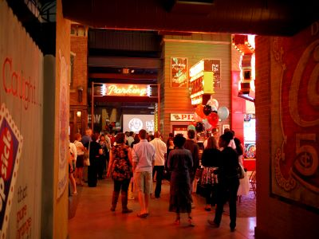
Des Moines Guy, CC BY-SA 3.0, via Wikimedia Commons; Image Size Adjusted

American Sign Museum
Indoor museum featuring a vibrant collection of vintage and neon signage from across American history.
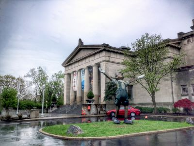
Danksergeant15, CC BY-SA 4.0, via Wikimedia Commons; Image Size Adjusted

Cincinnati Art Museum
Expansive cultural institution offering a diverse collection of artworks spanning 6,000 years of global history.
Danksergeant15, CC BY-SA 4.0, via Wikimedia Commons; Image Size Adjusted
Cincinnati City Hall
Monumental civic building featuring Romanesque architecture, ornate stained glass, and enduring spaces that support municipal governance and public affairs.
Dsmspence, CC BY-SA 3.0, via Wikimedia Commons; Image Size Adjusted

Cincinnati Museum Center
Multi-museum complex housed in a historic Art Deco train station featuring science, history, and children’s exhibits.
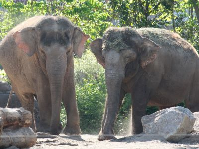
Dsmspence, CC BY-SA 3.0, via Wikimedia Commons; Image Size Adjusted
Cincinnati Zoo and Botanical Garden
Expansive zoological and botanical park featuring hundreds of animal species and thousands of plant varieties in immersive naturalistic habitats.
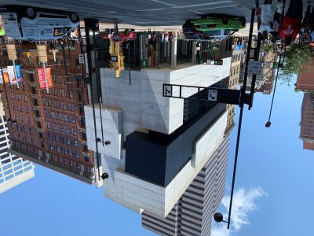
Dsmspence, CC BY-SA 3.0, via Wikimedia Commons; Image Size Adjusted
Contemporary Arts Center
Non-collecting contemporary art institution showcasing rotating exhibitions of cutting-edge visual and performance art.
Jonathunder, CC BY-SA 3.0, via Wikimedia Commons; Image Size Adjusted

Crystalline Tower
Striking 90-foot titanium-clad sculpture composed of three triangular spires aligned with the sun’s solstices and cardinal directions.
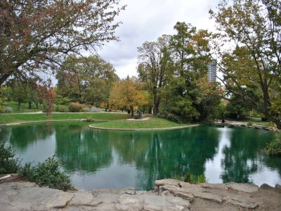
Dsmspence, CC BY-SA 3.0, via Wikimedia Commons; Image Size Adjusted
Eden Park
Urban hillside park offering scenic river views, gardens, walking trails, and cultural landmarks in a lush natural setting.
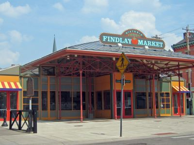
Dsmspence, CC BY-SA 3.0, via Wikimedia Commons; Image Size Adjusted
Findlay Market
Bustling historic marketplace offering local produce, meats, artisanal foods, and cultural events in a vibrant indoor-outdoor setting.
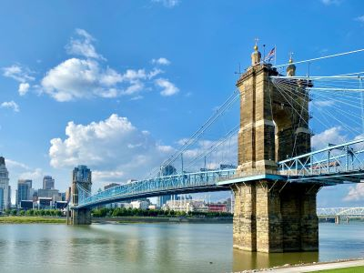
Dsmspence, CC BY-SA 3.0, via Wikimedia Commons; Image Size Adjusted
John A. Roebling Suspension Bridge
Historic suspension bridge spanning the Ohio River, offering pedestrian and vehicle access with panoramic views of the Cincinnati skyline.
-400.jpg)
Dsmspence, CC BY-SA 3.0, via Wikimedia Commons; Image Size Adjusted
Jungle Jim's International Market
Massive international grocery and entertainment complex offering global foods, themed attractions, and family-friendly events in a whimsical setting.
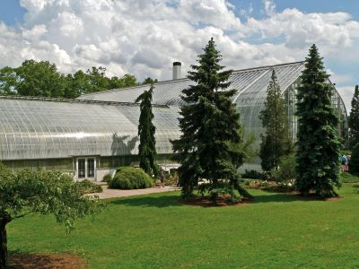
Dsmspence, CC BY-SA 3.0, via Wikimedia Commons; Image Size Adjusted
Krohn Conservatory
Indoor botanical garden showcasing over 3,500 plant species from around the world with seasonal floral shows and themed exhibits.
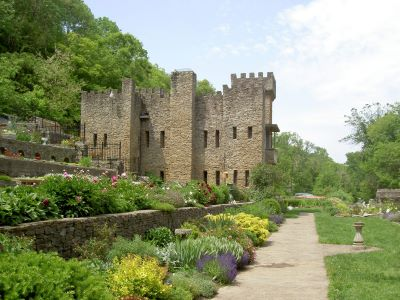
Dsmspence, CC BY-SA 3.0, via Wikimedia Commons; Image Size Adjusted
Loveland Castle Museum
Hand-built medieval-style stone castle featuring gardens, artifacts, and self-guided tours along the Little Miami River.
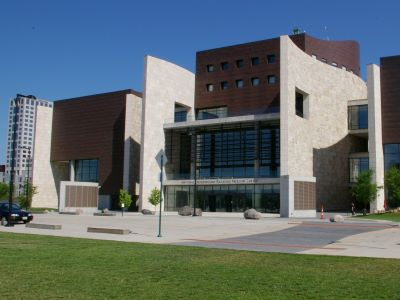
Dsmspence, CC BY-SA 3.0, via Wikimedia Commons; Image Size Adjusted
National Underground Railroad Freedom Center
Museum dedicated to the history of the Underground Railroad and ongoing struggles for freedom through immersive exhibits and educational programs.
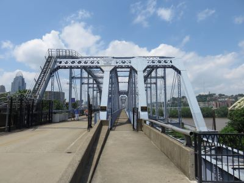
Dsmspence, CC BY-SA 3.0, via Wikimedia Commons; Image Size Adjusted
Purple People Bridge
Pedestrian-only truss bridge spanning the Ohio River with scenic views, historic charm, and access to trails and attractions on both riverbanks.
Dsmspence, CC BY-SA 3.0, via Wikimedia Commons; Image Size Adjusted
Smale Riverfront Park
Expansive riverfront park featuring gardens, fountains, playgrounds, public art, and panoramic views of the Ohio River and city skyline.
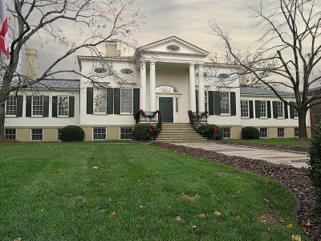
Dsmspence, CC BY-SA 3.0, via Wikimedia Commons; Image Size Adjusted
Taft Museum of Art
Historic house museum featuring European and American masterworks, decorative arts, and murals in an intimate 19th-century setting.
Dsmspence, CC BY-SA 3.0, via Wikimedia Commons; Image Size Adjusted
William Howard Taft National Historic Site
Preserved Greek Revival home and visitor center honoring the life and legacy of the 27th U.S. President and 10th Chief Justice.
Overview
Cincinnati, Ohio, is a river city on the north bank of the Ohio River, across from northern Kentucky, and is among the most historic and architecturally rich cities in the Midwest. It is known for its hilly setting, its collection of well-preserved nineteenth-century buildings, its German heritage, and a food culture built on Cincinnati-style chili served over spaghetti, as well as Graeter's ice cream. Nicknamed the "Queen City," it has long been an important center for commerce, manufacturing, music, and culture, and it is home to the headquarters of Procter & Gamble and a number of other major companies.
Visitors come to Cincinnati for its walkable riverfront, its excellent museums, one of the country's best zoos, and its neighborhoods, such as Over-the-Rhine, with their restored brick streets, breweries, restaurants, and music venues. It is also a popular stop for sports fans, for families, and for travelers interested in American history, especially the story of the Underground Railroad. The city is easy to reach by car from much of the Midwest and the South, and its compact downtown makes it one of the more affordable and relaxed big-city destinations in the region.
History
The settlement was founded in 1788 as Losantiville and renamed Cincinnati in 1790 in honor of the Society of the Cincinnati, a veterans' organization of Revolutionary War officers, and it grew quickly as a port for river commerce and a center for meatpacking that earned it the nickname "Porkopolis." Large numbers of German and Irish immigrants arrived in the nineteenth century, and by the 1850s it was among the largest cities in the country. Because of its location on the border between free and slave states, Cincinnati was an important crossing point on the Underground Railroad, and its residents included Harriet Beecher Stowe, who lived here before writing Uncle Tom's Cabin. The city later became a leader in soap, machine tools, and brewing, and today it has transformed into a center for healthcare, finance, education, and consumer goods, while restoring much of its historic urban core.
Sightseeing and Popular Landmarks
Cincinnati's best-known landmarks include the John A. Roebling Suspension Bridge, a precursor to Roebling's Brooklyn Bridge, and the neighboring Purple People Bridge for pedestrians. Smale Riverfront Park offers views of the river and playgrounds, and downtown also has Cincinnati City Hall and the Art Deco Carew Tower and its observation deck. Findlay Market, Ohio's oldest continuously operated public market, is in Over-the-Rhine, which has one of the largest collections of Italianate architecture in the United States, and the American Sign Museum, Loveland Castle, and Jungle Jim's International Market are good stops for more unusual attractions.
Culture and Museums
Cincinnati has a strong cultural scene for a city of its size. The Cincinnati Art Museum in Eden Park has free general admission and a collection of more than 70,000 works, the Taft Museum of Art is housed in a historic mansion, and the Contemporary Arts Center shows modern art in a building by Zaha Hadid. The Cincinnati Museum Center at Union Terminal, an Art Deco railway station, houses several museums, and the National Underground Railroad Freedom Center tells the story of the struggle for freedom in America. The William Howard Taft National Historic Site is the birthplace and boyhood home of the 27th president. Music Hall is home to the Cincinnati Symphony Orchestra, the Cincinnati Pops, the Cincinnati Opera, and the May Festival Chorus, and the city also hosts the large Oktoberfest Zinzinnati each September.
Parks
The city and its surroundings have many parks that take advantage of the hills and the river. Eden Park has overlooks, lakes, the Art Museum, and the Krohn Conservatory, and the Cincinnati Zoo and Botanical Garden, the second-oldest zoo in the United States, is known for its manatees, gorillas, and conservation work. Smale Riverfront Park links downtown with the river, and Devou Park in Covington, Kentucky, has one of the best views of the Cincinnati skyline. Other options include Mount Airy Forest, Ault Park, and the Little Miami Scenic Trail.
Sports
Cincinnati is a strong sports city. The Cincinnati Reds, the first professional baseball team in the country, play at Great American Ball Park on the riverfront, and the Cincinnati Bengals of the National Football League play at Paycor Stadium next door. FC Cincinnati of Major League Soccer plays at TQL Stadium in the West End, and the city has a long tradition of college basketball with the Xavier Musketeers and the University of Cincinnati Bearcats. The Cincinnati Open tennis tournament is held every August in nearby Mason.
Seasons and Weather
Cincinnati has a humid continental climate with four distinct seasons. Summers are warm and humid, with highs usually in the 80s°F, while winters are cold, with highs in the 30s and 40s°F and occasional snowfall, averaging about 20 inches annually. Spring and fall are generally mild and are the most comfortable seasons to visit, and fall colors in the hills are a highlight. Rain is fairly evenly distributed throughout the year, and thunderstorms are common in spring and summer, so visitors should be prepared for changeable weather.
This article uses material from Wikipedia as well as information from official tourism and institutional sources. Key references include Cincinnati USA Convention & Visitors Bureau, William Howard Taft National Historic Site, Cincinnati Zoo and Botanical Garden, Cincinnati Art Museum, National Underground Railroad Freedom Center, Cincinnati Parks, Cincinnati Reds, Cincinnati Bengals, FC Cincinnati, and the National Weather Service Wilmington, OH. Wikipedia material is from the articles "Cincinnati" and "History of Cincinnati", and is available under the Creative Commons Attribution-Share-Alike License 3.0.

.jpg){kind=link}
.jpg)